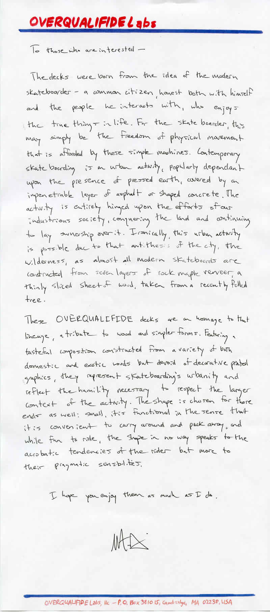

The skateboard manifesto
Transcript
To those who are interested —
The decks were born from the idea of the modern skateboarder — a common citizen, honest both with himself and the people he interacts with, who enjoys the true things in life. For the skateboarder, this may simply be the freedom of physical movement that is afforded by these simple machines. Contemporary skateboarding is an urban activity, popularly dependant upon the presence of pressed earth, covered by an impenetrable layer of asphalt or shaped concrete. The activity is entirely hinged upon the efforts of our industrious society, conquering the land and continuing to lay ownership over it. Ironically this urban activity is possible due to that antithesis of the city, the wilderness, as almost all modern skateboards are constructed from seven layers of rock maple veneer, a thinly sliced sheet of wood, taken from a recently felled tree.
These OVERQUALIFIDE decks are an homage to that lineage, a tribute to wood and simpler forms. Featuring a tasteful composition constructed from a variety of both domestic and exotic woods but devoid of decorative printed graphics they represent skateboarding’s urbanity and reflect the humility necessary to respect the larger context of the activity. The shape is chosen for those ends as well: small, it is functional in the sense that it is convenient to carry around and pack away, and while fun to ride, the shape in no way speaks to the acrobatic tendencies of the rider but more to their pragmatic sensibilities.
I hope you enjoy them as much as I do.
[Signature]
OVERQUALIFIDE Labs, llc — P.O. Box 381015, Cambridge, MA 02238, USA
